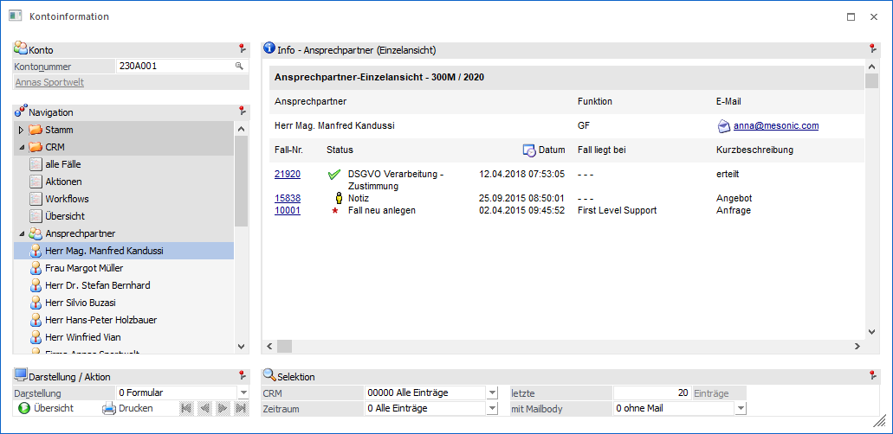
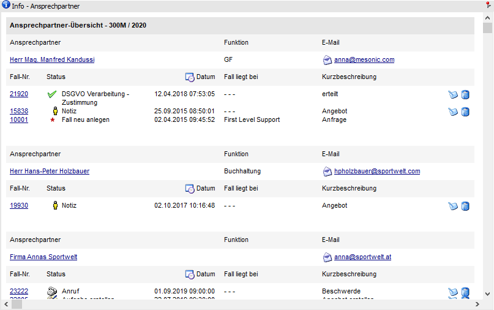
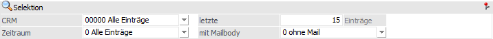
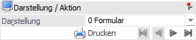

Kontoinformation - Bereich "CRM" - Ansicht "Ansprechpartner"
Unter der Ansicht "Ansprechpartner" werden die zugeordneten Ansprechpartner aufgeführt und alle CRM-Einträge (CRM Workflows und CRM Aktionen) zu den Ansprechpartnern angezeigt. Dabei stehen eine Gesamtübersicht und eine Einzelansicht zur Verfügung. Innerhalb dieser Anzeigen kann die Ausgabe wiederum in Form einer Formularansicht oder als Tabelle erfolgen.
Hinweis 1
Wenn der CRM-Eintrag durch die Archivierung einer E-Mail entstanden ist (per "WinLine Archiv"-Button aus Microsoft Outlook), dann werden zusätzlich folgende Informationen ausgewiesen:
ü Typ der E-Mail (Mail gesendet bzw. Mail erhalten)
ü Sende- bzw. Empfangsdatum der E-Mail
ü Betreff der E-Mail
ü Versender bzw. Empfänger der E-Mail
Hinweis 2
Ob der Ansprechpartner-Baum geöffnet oder geschlossen ist wird benutzerspezifisch gespeichert. Die Speicherung erfolgt hierbei, wenn der Fokus auf dem Eintrag "Ansprechpartner" liegen und anschließend der Baum geöffnet oder geschlossen wird.

Die Ansicht "Workflows" besteht aus den folgenden Info-Elementen:
ü Info - Ansprechpartner
ü Selektion
ü Darstellung / Aktion
Info - Ansprechpartner

An dieser Stelle werden die Ansprechpartner und deren CRM-Fälle, gemäß der nachfolgenden Selektion, dargestellt. Die Art der Anzeige kann mit Hilfe der Option "Darstellung" gewählt werden.
Ø  CRM-Fall bearbeiten
CRM-Fall bearbeiten
Durch Anwahl dieses Buttons kann ein angelegter CRM-Fall bearbeitet werden.
Ø  CRM-Fall löschen
CRM-Fall löschen
Mit Hilfe dieses Buttons kann der CRM-Fall gelöscht werden.
Selektion

In diesem Bereich kann definiert werden viele CRM-Workflows dargestellt werden sollen. Die gewählten Einstellungen werden benutzerspezifisch gespeichert.
Ø CRM
An dieser Stelle kann ausgewählt werden, was für CRM-Fälle angezeigt werden sollen. Hierfür stehen folgende Auswahlmöglichkeiten zur Verfügung:
ü 1 - nur Aktionen
ü 2 - nur Workflows
ü 3 - beide
Hinweis
Je nachdem was unter der Option "Letzte" hinterlegt wurde, werden zusätzlich noch einzelne CRM-Aktionen bzw. CRM-Workflows zur Auswahl vorgeschlagen.
Ø Zeitraum
Über die Auswahlbox kann bestimmt werden, aus welchem Zeitraum die CRM-Fälle stammen sollen. Hierbei wird auf das Feld "Datum Schritt geschrieben" aus dem CRM-Fall zugegriffen. Folgende Einstellungsmöglichkeiten stehen dabei zur Verfügung:
ü 0 - Alle Einträge
ü 1 - das letzte Jahr
ü 2 - das letzte Halbjahr
ü 3 - das letzte Quartal
ü 4 - der letzte Monat
ü 5 - die letzte Woche
ü 6 - heute
Ø letzte x Einträge
An dieser Stelle kann die Anzahl der maximal anzuzeigenden CRM-Fälle hinterlegt werden.
Ø mit Mailbody
Grundsätzlich kann durch Archivierung einer E-Mail ein CRM-Fall erzeugt werden. Mit Hilfe dieser Option kann hierfür definiert werden, ob Mailinformationen direkt angezeigt werden sollen.
Hinweis
Folgende Voraussetzungen müssen gegeben sein:
ü Die Archivierung einer E-Mail erfolgt aus Microsoft Outlook mit Hilfe des "WinLine Archiv"-Buttons.
ü Es wurden Archiv-Formulartypen mit der Kategorie-Zuweisung "Posteingang" und "Postausgang" angelegt.
ü In den Archiv-Formulartypen wurde ein CRM-Workflow bzw. eine CRM-Aktion hinterlegt.
ü In dem bei der Archivierung entstehenden CRM-Fall wird ein Personenkonto und der Kontakt (Ansprechpartner) eingetragen.
Darstellung / Aktion

Ø Darstellung
An dieser Stelle kann mit Hilfe einer Auswahlliste gewählt werden, ob die Darstellung der Fälle in Form eines Formulars oder einer Tabelle erfolgen soll.
Ø Übersicht
Mit Hilfe dieses Buttons kann von einer Einzelanzeige in die Gesamtübersicht zurückgewechselt werden.
Ø  Drucken
Drucken
Durch Anwahl dieses Buttons wird die Formularansicht ausgedruckt.
Ø  VCR-Buttons
VCR-Buttons
Sollte die Anzeige der CRM-Fälle in der Formularansicht über mehrere Seiten dargestellt werden, so kann mit Hilfe der VCR-Buttons zwischen den einzelnen Seiten gewechselt werden.